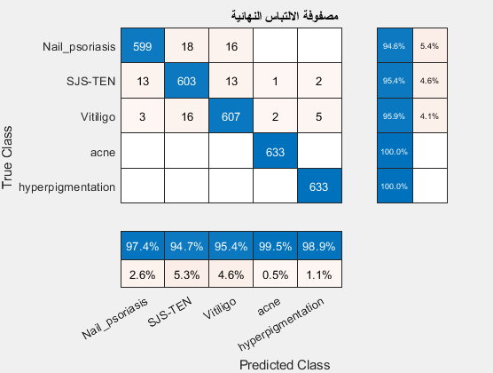

جميع المشاريع

تحليل بيانات المبيعات لشركة X
تحليل اتجاهات المبيعات، تحديد العوامل المؤثرة، وبناء نموذج تنبؤي للإيرادات.
Python Machine Learning
دراسة رضا العملاء باستخدام R
تصميم استبيان، جمع وتحليل البيانات باستخدام R، وتحديد أهم محركات رضا العملاء.
R SPSS
تطوير لوحة مؤشرات تفاعلية
استخدام MATLAB (أو Python مع Dash/Streamlit) لتطوير لوحة مؤشرات تفاعلية.
MATLAB Data Visualization
تحليل السلاسل الزمنية
تطبيق نماذج ARIMA و Prophet للتنبؤ بالطلب المستقبلي على المنتجات.
Python Time Series
تجزئة العملاء (Clustering)
استخدام خوارزميات التجميع مثل K-Means لتحديد شرائح العملاء المختلفة.
Python Unsupervised Learning
تحليل المشاعر للنصوص
تطبيق تقنيات معالجة اللغة الطبيعية لتحليل آراء العملاء من المراجعات.
Python NLP
مشروع إضافي مميز 1
وصف موجز للمشروع الإضافي الذي يظهر عند الضغط على "إظهار المزيد".
تقنية جديدة
مشروع إضافي مميز 2
وصف آخر لمشروع إضافي يظهر عند الضغط على "إظهار المزيد".
أداة تحليل